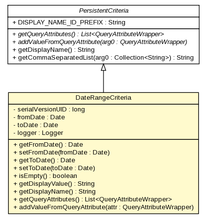

gov.nih.nci.ncia.criteria
Class DateRangeCriteria

java.lang.Object
 gov.nih.nci.ncia.criteria.Criteria
gov.nih.nci.ncia.criteria.PersistentCriteria
gov.nih.nci.ncia.criteria.DateRangeCriteria
gov.nih.nci.ncia.criteria.Criteria
gov.nih.nci.ncia.criteria.PersistentCriteria
gov.nih.nci.ncia.criteria.DateRangeCriteria
- All Implemented Interfaces:
- GridSearchCriteria, java.io.Serializable
public class DateRangeCriteria
- extends gov.nih.nci.ncia.criteria.PersistentCriteria
- See Also:
- Serialized Form
| Fields inherited from class gov.nih.nci.ncia.criteria.PersistentCriteria |
DISPLAY_NAME_ID_PREFIX |
| Methods inherited from class gov.nih.nci.ncia.criteria.PersistentCriteria |
getCommaSeparatedList |
| Methods inherited from class java.lang.Object |
clone, equals, finalize, getClass, hashCode, notify, notifyAll, toString, wait, wait, wait |
serialVersionUID
private static final long serialVersionUID
- See Also:
- Constant Field Values
fromDate
private java.util.Date fromDate
toDate
private java.util.Date toDate
logger
private static org.apache.log4j.Logger logger
DateRangeCriteria
public DateRangeCriteria()
getFromDate
public java.util.Date getFromDate()
- Returns:
- Returns the fromDate.
setFromDate
public void setFromDate(java.util.Date fromDate)
- Parameters:
fromDate - The fromDate to set.
getToDate
public java.util.Date getToDate()
- Returns:
- Returns the toDate.
setToDate
public void setToDate(java.util.Date toDate)
- Parameters:
toDate - The toDate to set.
isEmpty
public boolean isEmpty()
- Specified by:
isEmpty in class gov.nih.nci.ncia.criteria.Criteria
getDisplayValue
public java.lang.String getDisplayValue()
- Specified by:
getDisplayValue in class gov.nih.nci.ncia.criteria.Criteria
getDisplayName
public java.lang.String getDisplayName()
- Overrides:
getDisplayName in class gov.nih.nci.ncia.criteria.PersistentCriteria
getQueryAttributes
public java.util.List<gov.nih.nci.ncia.querystorage.QueryAttributeWrapper> getQueryAttributes()
- Specified by:
getQueryAttributes in interface GridSearchCriteria- Specified by:
getQueryAttributes in class gov.nih.nci.ncia.criteria.PersistentCriteria
addValueFromQueryAttribute
public void addValueFromQueryAttribute(gov.nih.nci.ncia.querystorage.QueryAttributeWrapper attr)
- Specified by:
addValueFromQueryAttribute in class gov.nih.nci.ncia.criteria.PersistentCriteria